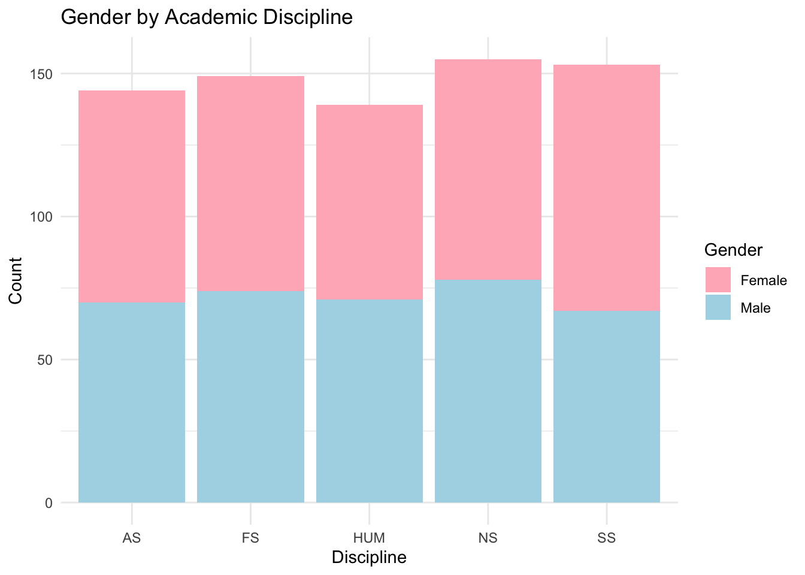
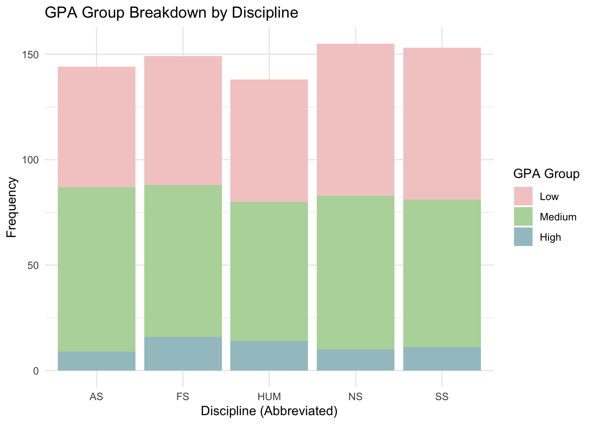
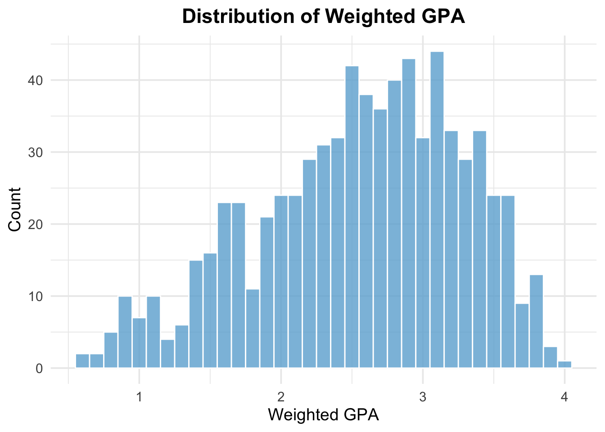
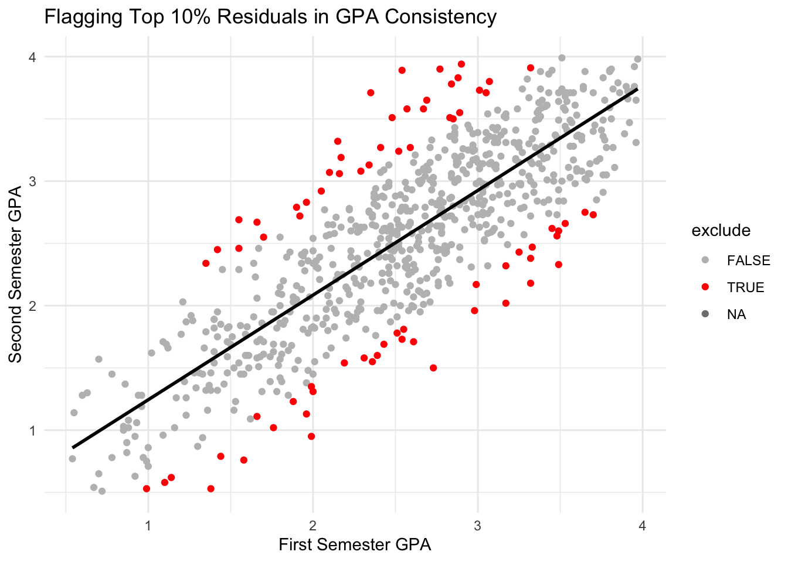
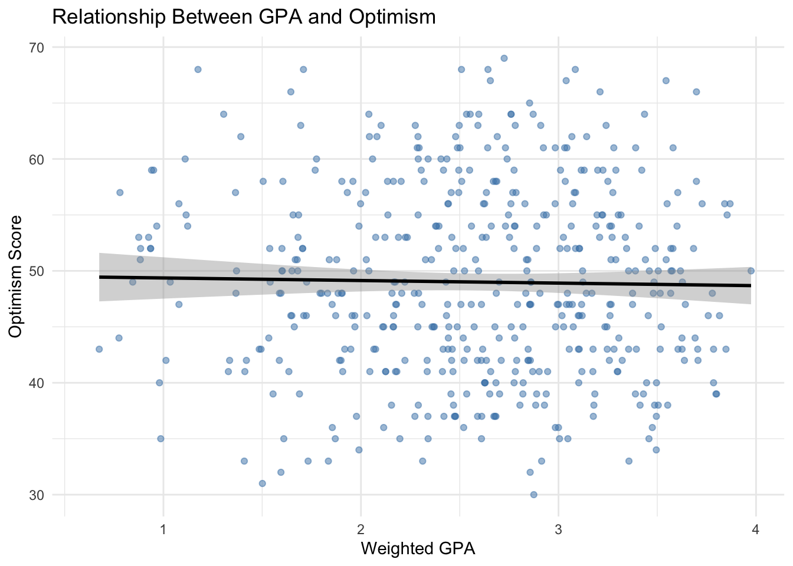
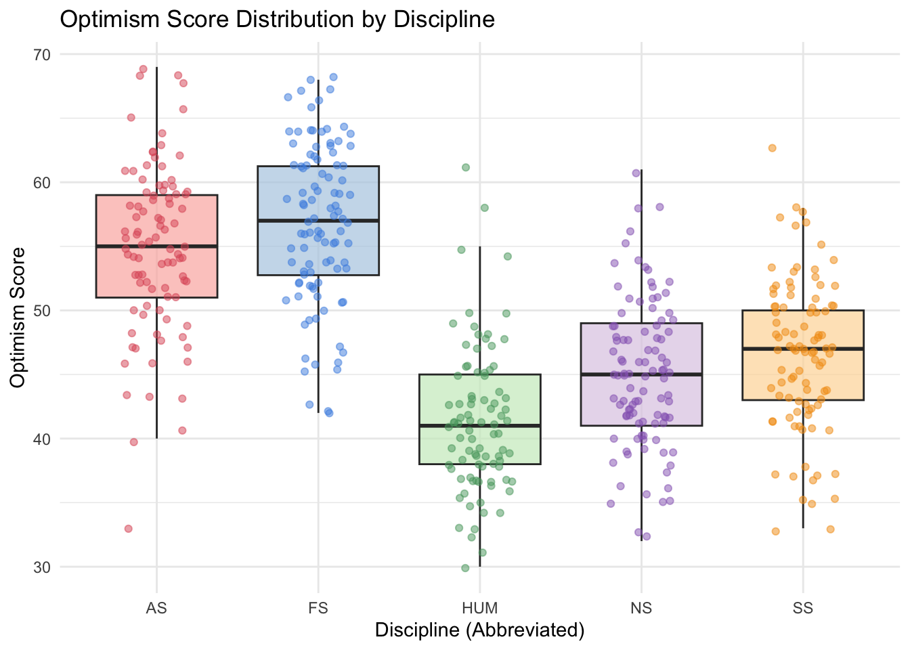
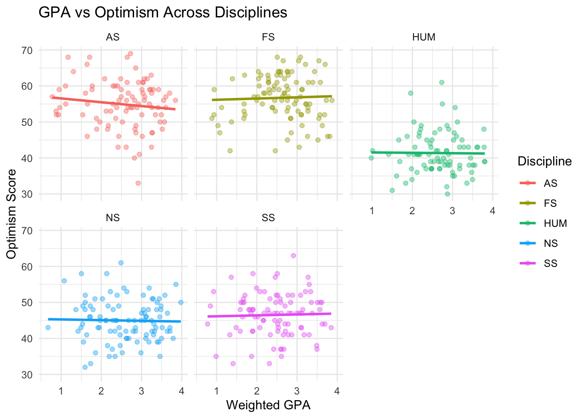
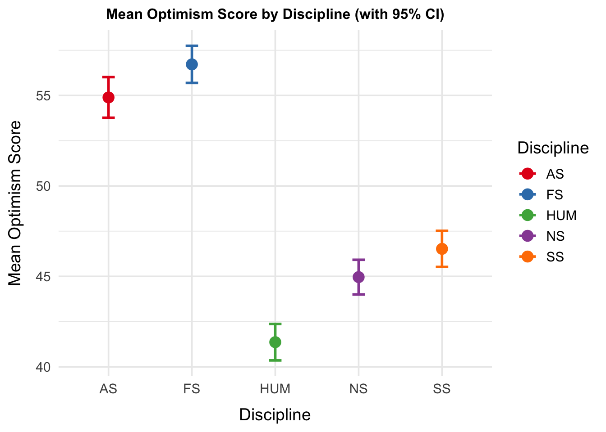

Job Prep Analysis Report
1 Introduction
As college students approach graduation, perceptions about post-graduation job opportunities may strongly influence both motivation and decision-making and could alter their own mental well-being. Optimism about future employment is especially important, since optimism may reflect robust grit and a student’s inate confidence in their ability to transition from college to professional jobs. It’s important to understand these factors that shape optimism so that college institutions better support students as they prepare to enter the workforce.
Academic performance is another potential contributor to employment-related optimism. A traditional indicator of academic success, Grade Point Average (GPA), may influence students perception on attainability of future job prospects. However, it is unclear if the relationship between optimism, disciplines, and GPA exist expecially across different degrees of study. Students in applied or technical disciplines may perceive greater job security or demand for their skills, while students in humanities or social sciences may face more uncertainty, potentially altering their outcome compared to other students of different disciplines. If a relationship is found this may help enforce better discipline specific counsuling to aid in promoting optimism around future workforce opportunites.
The purpose of this report is to investigate the relationship between college senior’s GPA and optimism about future employment. Specifically we will examine whether this relationship differs across academic disciplines. In order to ensure reliability of GPA as a performance measure we examined consistency between between first and second semester GPA and excluded any students with unusually large discrepancies. We also accounted for demographic differences by controlling for gender and age in all models.
The three research questions that guide this report are:
Is senior-year GPA related to the degree of optimism about future employment?
Is the relationship between GPA and optimism consistent or different across disciplines?
Are optimism levels different across academic disciplines, regardless of GPA?
1.1 Descriptive Statistics
The analytic sample was compiled by an independent research team, Real World Solutions (RWS), who distributed an optimism survey to over 700 college seniors from 23 major universities across the United States. The final sample included 740 students, with a nearly even gender distribution (51% female, 49% male) and an average age of 22 years (± 1 year). In terms of academic discipline, students in Natural Sciences made up the largest share (21%), followed by those in Formal Sciences and Social Sciences (20% each). Applied Sciences represented 19% of the sample, while Humanities accounted for the remaining 18%.
We visualized the sample characteristics using two stacked bar graphs. Figure 1 displays the gender distribution (male vs. female) across academic disciplines, while Figure 2 shows how students are distributed across GPA categories—Low (GPA < 2.5), Medium (2.5–3.5), and High (> 3.5)—within each discipline. A more detailed summary of the sample’s demographic and academic characteristics is presented in Table 1.
Figure 1. Gender by Academic Discipline Stacked Bar Plot Shown in Figure 1, we visualizes the gender distribution across the five academic disciplines: Applied Sciences (AS), Formal Sciences (FS), Humanities (HUM), Natural Sciences (NS), and Social Sciences (SS). Gender representation was relatively balanced in most disciplines, with Applied Sciences, Humanities, Formal Sciences, and Natural Sciences each showing near-equal proportions of male and female students. Social Sciences, however, had a noticeably higher proportion of female students. These patterns may reflect broader national trends in undergraduate enrollment and highlight the importance of considering gender composition when interpreting discipline-specific outcomes.

Figure 2. GPA by Academic Discipline Stacked Bar Graph
Exploring the distribution of students across GPA categories—Low (<2.5), Medium (2.5–3.5), and High (>3.5)—within each academic discipline is shown ins Figure 2. In all five disciplines, the majority of students fall into the Medium GPA category (green), with relatively few students classified in the High GPA group (blue). These results indicate that while GPA distributions are generally consistent, there are some discipline-specific variations in how students are spread across performance categories.
| Discipline | Mean GPA | SD GPA | Mean Optimism | SD Optimism | Mean Age | SD Age | Female (n) | Male (n) | Sample Size |
|---|---|---|---|---|---|---|---|---|---|
| Applied Sciences | 2.58 | 0.75 | 54.78 | 6.53 | 22.06 | 0.56 | 74 | 70 | 144 |
| Formal Sciences | 2.58 | 0.73 | 56.96 | 6.18 | 22.07 | 0.55 | 75 | 74 | 149 |
| Humanities | 2.63 | 0.66 | 41.05 | 5.54 | 21.98 | 0.52 | 68 | 71 | 139 |
| Natural Sciences | 2.55 | 0.75 | 45.00 | 5.48 | 22.00 | 0.61 | 77 | 78 | 155 |
| Social Sciences | 2.46 | 0.74 | 46.43 | 5.94 | 21.94 | 0.64 | 86 | 67 | 153 |
Table 1 provides detailed descriptive statistics by academic discipline, offering a closer look at sample characteristics. Mean GPA was relatively stable across disciplines, ranging from 2.48 in SS to 2.64 in HUM. However, optimism scores demonstrated more variability: students in FS reported the highest mean optimism (M = 56.96), while those in HUM reported the lowest (M = 41.05). Age was consistent across groups, averaging slightly above 22 years, with limited variability (Sd ± 1 year).

Figure 3. Distribution of GPA Histogram
The histogram in Figure 3 illustrates the distribution of weighted GPA scores among the sample of 740 college seniors. The distribution is approximately normal, with a slight left skew, indicating that most students had their GPA clustered between 2.5 and 3.5. The peak occurs near a GPA of 3.0, with fewer students falling below 2.0 or above 3.8. This central tendency suggests that the sample is academically representative, with only a small proportion of students at either extreme. The range and spread of GPA values also reinforce the appropriateness of using GPA as a continuous variable in subsequent regression analyses examining its relationship to optimism.

Figure 4. Distribution of Optimism Scores Histogram
Now moving to optimism Figure 4 shows the distribution of optimism scores among graduating college seniors. The distribution is moderately right-skewed, with most students scoring between 40 and 55 on the optimism scale. The peak appears around 45, indicating a central tendency toward moderate optimism. A small number of students reported very low or very high optimism, suggesting variability in students’ confidence about their post-graduation futures. This spread reinforces the importance of examining factors—like GPA and academic discipline—that may help explain these differences in perceived job prospects.
1.2 Analyses
1.2.1 Consistency Check of Semester 1 and Semester 2 GPA
Before proceeding to the main analyses, it was important to verify that key aspects of the data—namely, the consistency of GPA over time and the correct coding of the optimism measure—were accurate and reliable. To test for consistency we first identified any usually high residuals since high residuals can skew results from our models and further misconstrue whether there are relationships or not between out variables. These residuals can be seen in Figure 5 below those that a highlighted red were flagged as high residuals in which we later filter out of our analysis. We also ensured that first- and second-semester GPA values were consistent before computing an average GPA which is also shown in Figure 5. Additonally, To test for consistency between first-and-second semester GPA a linear regression model was performed to further confirm (Table 2), to show that first semester GPA can predict second semester GPA, indicating strong consistency between semesters.

Figure 5. Visual Verification of GPA Consistencies and high residuals
Orienting the Figure 5, we see a mapping of residuals to highlight which data points were flagged as unusually high. To identify these outliers, the flag_large_residuals() function was developed. This function fits a linear model between two variables—in this case, first- and second-semester GPA—and flags the top p largest absolute residuals as TRUE, indicating they are unusually inconsistent with the model. All other cases are marked as FALSE, reflecting more typical or consistent academic performance. This visual, alongside the regression line, demonstrates a strong positive relationship between the two GPA measures, supporting our decision to average them for a single academic performance score.
| Predictor | Estimate | Std_Error | t_value | p_value |
|---|---|---|---|---|
| (Intercept) | 0.403 | 0.054 | 7.505 | 0 |
| s1_gpa | 0.841 | 0.020 | 41.712 | 0 |
In parallel, optimism scores were calculated as a composite from Likert-style survey items. Any items that were negatively worded were reverse-scored using the score_likert_scale() function, which takes the maximum value of the scale and subtracts each specified item’s score to reverse its direction. The function then replaces the original item values with their reversed versions and computes a total composite score across all items. This process ensured consistent interpretation across items before combining them into a single optimism score.
###Is senior-year GPA related to the degree of optimism about future employment?
In order to investigate whether academic performance influences students’ outlook on future employment (optimism), a multiple linear regression was conducted with weighted GPA as the key predictor of optimism. Gender and age were included as control variables to account for potential demographic differences. To ensure the reliability of GPA as an academic metric, students with the top 10% largest residuals were excluded from the model. This approach strengthened the validity of using averaged GPA as a predictor. Both the model (Table 3) and visualization of the model (Figure 7) are shown below.
Staring with our main effects model (Table 3) below, the regression model did not identify any significant predictors of optimism among GPA, gender, and age. While gender showed a marginal trend (p = .091), suggesting males may report slightly lower optimism, neither GPA (p = .690) nor age (p = .222) were statistically significant. These results suggest that academic performance and demographic factors do not strongly explain variation in optimism about future employment in this sample.
| Predictor | Estimate | Std. Error | t value | p-value |
|---|---|---|---|---|
| (Intercept) | 31.942 | 15.035 | 2.125 | 0.034 |
| GPA_weighted | -0.216 | 0.542 | -0.399 | 0.690 |
| gender | -1.301 | 0.768 | -1.694 | 0.091 |
| age | 0.829 | 0.679 | 1.222 | 0.222 |
In Figure 6, we visualized the regression line representing the relationship between college senior-year GPA and optimism scores. The plot clearly demonstrates a flat and non-directional trend, indicating no meaningful association between students’ academic performance and their confidence about future employment. This visual finding aligns with the regression results presented in Table 3, where GPA was not a statistically significant predictor of optimism (b = –0.216, p = .690). Together, these results suggest that students’ levels of optimism are likely shaped by factors other than academic achievement in their final year of college.

Figure 6. Relationship between GPA and Optimism
1.2.2 Is the relationship between GPA and optimism consistent or different across disciplines?
The next question we decided to tackle was to examine whether an association between academic performance and employment-related optimism varied by field of study. To evaluate this another multiple linear regression was conducted with interaction terms between GPA and academic discipline. This analysis aimed to determine whether the strength or direction of the GPA–optimism relationship differed across disciplines, while also accounting for potential confounding influences of gender and age. By including both main effects (Table 4) and interaction terms (Table 4), the model tested whether students in different academic areas experience distinct patterns in how GPA influences their outlook on future employment.
| Predictor | Estimate | Std_Error | t_value | p_value |
|---|---|---|---|---|
| (Intercept) | 52.562 | 10.817 | 4.859 | 0.000 |
| Formal Sciences | 1.905 | 0.866 | 2.200 | 0.028 |
| Humanities | -13.464 | 0.894 | -15.068 | 0.000 |
| Natural Sciences | -9.830 | 0.864 | -11.376 | 0.000 |
| Social Sciences | -8.367 | 0.878 | -9.535 | 0.000 |
| Gender | -1.225 | 0.551 | -2.223 | 0.027 |
| Age | 0.131 | 0.490 | 0.267 | 0.789 |
Table 4 summarizes our main effects model and demonstrates optimism levels vary significantly by academic discipline, with Humanities, Natural Sciences, and Social Sciences students reporting substantially lower optimism compared to those in Applied Sciences. Formal Sciences students were slightly more optimistic. Gender also showed a modest but significant effect, with males reporting lower optimism. Age had no significant association. These results suggest that discipline is a strong predictor of students’ confidence in their future, independent of age and gender.

Figure 7. GPA verses Optimism Across Academic Disciplines
Figure 8 displays boxplots of optimism scores across five academic disciplines: Applied Sciences (AS), Formal Sciences (FS), Humanities (HUM), Natural Sciences (NS), and Social Sciences (SS). The individual data points are overlaid with jittered dots to show the spread of responses within each group.
The figure visually confirms the regression findings in Table 3, where discipline significantly predicted optimism. Students in Humanities, Natural Sciences, and Social Sciences show noticeably lower median optimism scores, with many scores falling below 50. In contrast, Applied Sciences and Formal Sciences display higher medians and narrower interquartile ranges. This reinforces the regression results indicating that students in HUM, NS, and SS report significantly lower optimism than their peers in AS, even after adjusting for gender and age.
| Predictor | Estimate | Std_Error | t_value | p_value |
|---|---|---|---|---|
| (Intercept) | 54.779 | 11.024 | 4.969 | 0.000 |
| Gpa_weighted | -0.955 | 0.827 | -1.155 | 0.249 |
| Formal Sciences | -1.410 | 3.203 | -0.440 | 0.660 |
| Humanities | -15.603 | 3.576 | -4.363 | 0.000 |
| Natural Sciences | -11.544 | 3.135 | -3.682 | 0.000 |
| Social Sciences | -11.445 | 3.165 | -3.616 | 0.000 |
| Gender | -1.194 | 0.555 | -2.151 | 0.032 |
| Age | 0.140 | 0.493 | 0.285 | 0.776 |
| Gpa_weighted × Formal Sciences | 1.287 | 1.190 | 1.082 | 0.280 |
| Gpa_weighted × Humanities | 0.840 | 1.324 | 0.635 | 0.526 |
| Gpa_weighted × Natural Sciences | 0.674 | 1.166 | 0.578 | 0.563 |
| Gpa_weighted × Social Sciences | 1.213 | 1.214 | 1.000 | 0.318 |
In our interaction model (Table 5) we find that students in HUM, NF, and SS report significantly lower optimism than those in Applied Sciences, regardless of GPA. Gender also plays a modest role, with males reporting lower optimism. However, GPA itself is not predictive, and its effect does not interact with discipline — meaning academic performance does not differentially relate to optimism across majors.

Figure 8. Optimism by Academic Disciplines
Figure 8 presents scatterplots with fitted regression lines illustrating the relationship between GPA and optimism across five academic disciplines. Each facet represents a different discipline, allowing visual comparison of slopes and distributions within and across fields. Visually, the regression lines are relatively flat across all disciplines, suggesting little to no relationship between GPA and optimism within any single discipline.
This visual pattern aligns with the interaction model in Table 5, where none of the GPA × discipline interaction terms reached statistical significance (p > .28 for all). Specifically, although the direction of the slopes differs slightly by field (e.g., mildly upward for Formal Sciences, slightly downward for Natural Sciences), none of these slopes are steep or statistically distinguishable from zero.
Together, Figure 8 and Table 4 indicate that while academic discipline is a robust predictor of optimism, GPA is not, and there is no evidence that the GPA–optimism relationship depends on a student’s field of study.
1.2.3 Are optimism levels different across academic disciplines, regardless of GPA?
Finally, to examine whether students’ optimism about post-graduation employment differs by academic discipline—independent of their academic performance—we first conducted a one-way ANOVA (Table 5) to test for overall differences in optimism scores across disciplines followed by a post-hoc analysis using Tukey-adjusted pairwise comparisons (Table 6). This allowed us to determine which specific academic disciplines significantly differed from one another in terms of optimism, while controlling for covariates such as gender and age.
| Term | Df | Sum Sq | Mean Sq | F value | Pr(>F) |
|---|---|---|---|---|---|
| discipline_marker | 4 | 16558.74 | 4139.686 | 114.098 | 0 |
| Residuals | 473 | 17161.25 | 36.282 | -- | -- |
To assess whether students’ optimism about future employment varied by academic discipline, a one-way ANOVA was conducted. The model was statistically significant, F(4, 473) = 114.1, p < .001, indicating that mean optimism scores differed significantly across the five disciplines (Table 6).
| Comparison | Difference | Lower CI | Upper CI | p-value |
|---|---|---|---|---|
| Formal Sciences-Applied Sciences | 1.828 | -0.549 | 4.204 | 0.219 |
| Humanities-Applied Sciences | -13.529 | -15.982 | -11.076 | 0.000 |
| Natural Sciences-Applied Sciences | -9.932 | -12.303 | -7.562 | 0.000 |
| Social Sciences-Applied Sciences | -8.372 | -10.771 | -5.972 | 0.000 |
| Humanities-Formal Sciences | -15.356 | -17.767 | -12.946 | 0.000 |
| Natural Sciences-Formal Sciences | -11.760 | -14.086 | -9.433 | 0.000 |
| Social Sciences-Formal Sciences | -10.199 | -12.556 | -7.842 | 0.000 |
| Natural Sciences-Humanities | 3.597 | 1.192 | 6.002 | 0.000 |
| Social Sciences-Humanities | 5.157 | 2.723 | 7.591 | 0.000 |
| Social Sciences-Natural Sciences | 1.560 | -0.791 | 3.912 | 0.365 |
The Tukey HSD post-hoc analysis revealed several significant differences in optimism scores across academic disciplines (Table 7). Specifically, Humanities students reported significantly lower optimism compared to all other disciplines, including Applied Sciences (mean difference = –13.53, p < .001), Formal Sciences (–15.36, p < .001), Natural Sciences (–11.76, p < .001), and Social Sciences (–10.20, p < .001). Natural Sciences and Social Sciences students also reported significantly lower optimism than students in Applied Sciences (p < .001 for both comparisons). In contrast, no significant differences were observed between Formal Sciences and Applied Sciences (p = .219) or between Social Sciences and Natural Sciences (p = .365). These findings suggest that students’ academic discipline is associated with differing levels of optimism, with Humanities students consistently showing the lowest levels.

Figure 9. Mean Optimism by Academic Discipline
Figure 9 illustrates the mean optimism scores across five academic disciplines, with error bars representing 95% confidence intervals. Students in Formal Sciences and Applied Sciences reported the highest levels of optimism, with mean scores exceeding 55, whereas students in Humanities had the lowest optimism scores, averaging near 42. Natural Sciences and Social Sciences fell between these extremes, showing moderately lower optimism than the technical fields. These visual trends are statistically confirmed by the Tukey HSD post-hoc comparisons (Table X), which reveal significant pairwise differences in optimism between most disciplines. Specifically, Humanities, Natural Sciences, and Social Sciences students reported significantly lower optimism than those in Applied Sciences and Formal Sciences (all p-values < .001). The only non-significant differences emerged between Formal Sciences and Applied Sciences (p = .219), and between Social Sciences and Natural Sciences (p = .365). These results collectively suggest that academic discipline is a meaningful predictor of students’ optimism about future employment, independent of GPA.
1.3 Conclustions
This analysis explored the relationship between college senior-year GPA and students’ optimism scores about post-graduation employment, with particular attention to whether this relationship varied by academic discipline. Our findings indicated that GPA was not a significant predictor of optimism, and the association between GPA and optimism did not differ across disciplines. However, optimism levels did vary significantly between disciplines: students in Applied and Formal Sciences reported higher levels of optimism, while those in Humanities, Natural Sciences, and Social Sciences reported significantly lower optimism, even after controlling for gender and age. This suggests that students’ perceptions of their post-graduation opportunities may be shaped not only by academic performance, but also by the nature of their field of study—possibly reflecting differences in job market clarity, career pipelines, or societal narratives around discipline value.
Gender also emerged as a modest predictor, with males reporting slightly lower optimism than females, though this difference was small. Age was not a significant factor, suggesting that optimism is more strongly tied to academic and social context than to maturity or proximity to graduation.
These findings have practical implications for colleges and universities. Institutions may consider implementing targeted career development programs, alumni mentorship opportunities, and clearer employment pathway communications—particularly in disciplines where students reported lower optimism. Career services offices could collaborate with academic departments in Humanities and Social Sciences to improve visibility into diverse career trajectories and help students translate their skills into employable terms. Additionally, fostering discipline-specific support networks, internship pipelines, and employer engagement initiatives may help bridge the optimism gap and ensure all students, regardless of major, feel confident and supported as they enter the workforce.
A key strength of this study was the use of a cleaned dataset that excluded students with inconsistent GPA reporting, improving the reliability of GPA as a performance indicator. However, an important limitation is the low internal consistency of the optimism measure (Cronbach’s α = .51), which may have attenuated the strength of observed associations. The use of cross-sectional data also limits causal interpretation. Future work should aim to improve measurement reliability and consider longitudinal or mixed-method designs to better capture how academic performance and field of study shape employment-related attitudes over time.